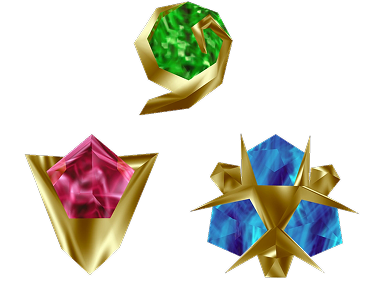
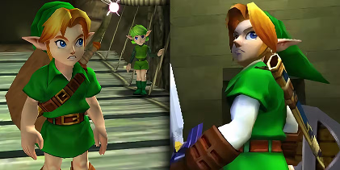

HISTÓRIA
Aqui está um pouco da história do jogo
A Jornada Começa
O jogo começa na Floresta Kokiri, onde vive Link, um jovem garoto que, ao contrário dos outros da floresta, não possui uma fada guardiã. Um dia, a Árvore Deku, guardiã espiritual da floresta, envia a fada Navi para despertar Link, pois uma grande ameaça se aproxima de Hyrule.
A Árvore Deku revela que está sendo corrompida por uma força maligna. Link entra em seu interior para enfrentar os monstros e purificar sua essência. Apesar da derrota do inimigo, a Árvore já está condenada e morre pouco depois, mas antes entrega a Pedra Espiritual da Floresta a Link e o instrui a ir ao Castelo de Hyrule para encontrar a Princesa Zelda.
A Princesa do Destino
Link deixa a Floresta Kokiri e chega ao Castelo de Hyrule, onde conhece a Princesa Zelda. Ela conta que o vilão Ganondorf está tentando roubar as Pedras Espirituais para abrir o Portão do Tempo e conseguir o poder da Triforce. Zelda pede a ajuda de Link para impedir isso. Ele aceita a missão e parte em busca das duas pedras restantes, dando início à sua jornada como o herói de Hyrule.

O Herói do Tempo
Link abre o Templo do Tempo e puxa a Master Sword, mas é selado por 7 anos por ainda ser muito jovem. Ao acordar como adulto, descobre que Ganondorf dominou Hyrule. Agora, como o Herói do Tempo, Link deve despertar os sábios para poder derrotar o mal.
Sete anos depois

Após dormir por sete anos no Templo do Tempo, ele conhece Rauru, o primeiro dos Sete Sábios, que revela que Link é o Herói do Tempo e deve agora despertar os outros cinco sábios escondidos em diferentes templos espalhados pelo mundo. Link recebe a Medalha da Luz e o item Pedestal da Espada é liberado para que ele possa voltar a ser criança quando necessário. Agora, sua missão é viajar por Hyrule adulto, libertar os templos e reunir o poder necessário para enfrentar Ganondorf.
A batalha final
Com todos os sábios despertos e os templos purificados, Link entra no Castelo de Ganon para enfrentar o mal de uma vez por todas. Ele supera os desafios dentro do castelo e finalmente confronta Ganondorf na torre. Em uma luta final no meio das ruínas, Link derrota Ganon com a Master Sword. Com a ajuda de Zelda e dos sábios, Ganon é selado no Reino Sagrado.
"O fluxo do tempo é sempre cruel... Sua velocidade parece diferente para cada pessoa, mas ninguém pode mudá-la... Uma coisa que não muda com o tempo é uma lembrança de tempos mais jovens..."
— SHEIK